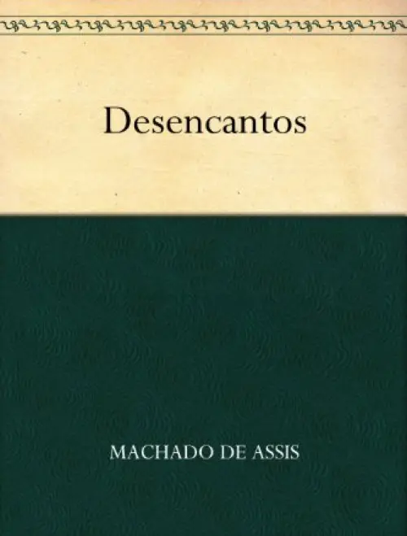
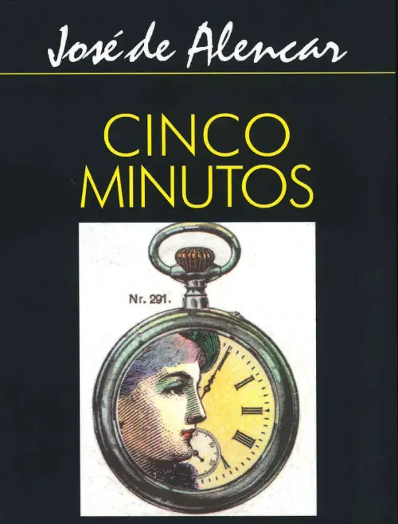

Romântico
Esta seção é dedicada a livros românticos cheios de emoção a clássicos intemporais que resistem ao teste do tempo.
Aproveite!
-

Desencantos
Desencantos é uma peça teatral curta escrita em 1861, por Machado de Assis, levantando questões como: vingança, reflexão filosófica, hipocrisia etc
Escute Aqui! -

Cinco Minutos
Este livro descreve de maneira precisa o dia-a-dia, as aflições e os preconceitos da classe média brasileira em meados do século passado.
/ Escute Aqui! -

As Primaveras
Os anseios da juventude, saudades da infância, fazem da obra de Casimiro de Abreu, precoce e espontânea.
/ Escute Aqui!